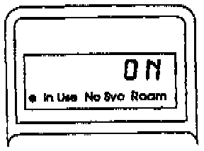
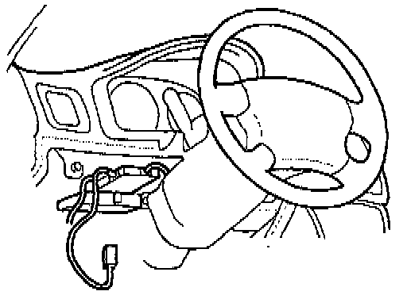
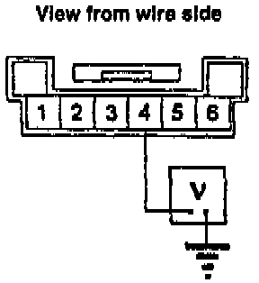
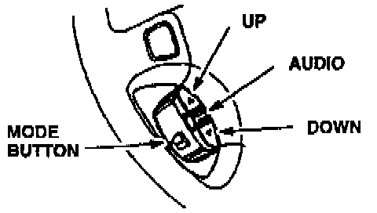
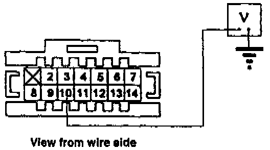
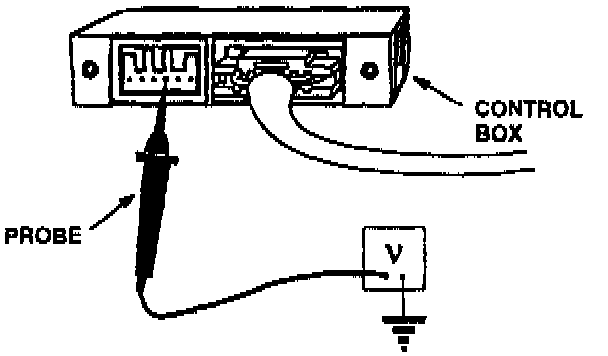
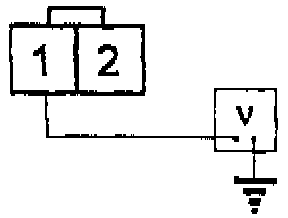
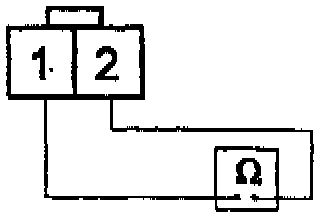
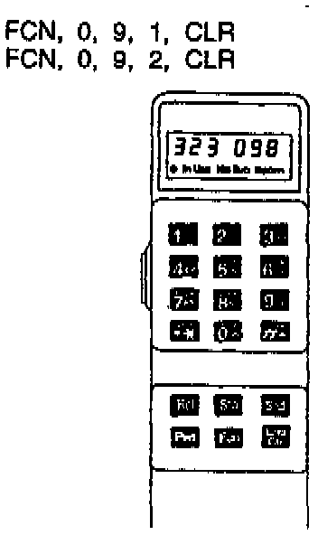
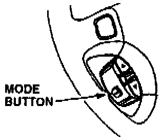

Remote Switch Module Is Inoperative
1. Before you begin, run the Components Check described on the first page and verify the problem.
2. Turn the ignition switch to I (Accessory). Then turn the phone on, and verify that it's unlocked. The handset display should read ON and stay ON throughout this test.

3. Remove the lower left dash panel to expose the 6-P connector on the control box (mounted near the steering column).

4. Set your DVOM to volts, then backprobe the 6-P connector at terminal 4 and measure voltage to ground.
Is there about 3.9 volts?
Yes - Go to the next step.
No - Go to step 8.

5. Again measure voltage between terminal 4 and ground while pressing the Up, Down, Audio, and Mode buttons one at a time.
Are your readings within these ranges?
Down 0.5V + or - 0.2
Up 1.3V + or - 0.2
Audio 1.9V + or - 0.25
Mode 2.7V + or - 0.35
Yes - Go to the next step.
No - Go to step 13.
6. With the phone ON, press the Mode button once. Does the phone speak or give you a tone or a beep?
Yes - OK here. Check connections at the control box, handset, and transceiver.
No - Go to the next step.

7. Make sure the phone is still ON. Then backprobe the 14-P control box connector at terminal 10 and measure voltage to ground while you press the Mode button several times.
Does the voltage momentarily drop from about 4.5V to less than 3V each time?
Yes - Go to step 15.
No - Replace the control box.[ ]
8. Disconnect the 6-P connector and remove the control box.

9. At the 6-P receptacle in the control box, measure the voltage between terminal 4 and ground.
Is there about 5 volts?
Yes - Go to the next step.
No - Replace the control box.[ ]
10. Reconnect the 6-P connector.
11. Disconnect the connector from the steering wheel remote switch.

12. Backprobe the remote switch connector to measure voltage between terminal 1 and ground.
Is there about 5 volts?
Yes - Replace the steering wheel switch.[ ]
No - Repair open or short in the wire between the control box and the steering wheel switch.[ ]
13. Remove and disconnect the steering wheel switch.

14. Set your DVOM to ohms and check resistance between the two terminals on the switch while pressing the buttons one at a time.
Are your readings about the same as these?
Down 100 ohms
Up 335 ohms
Audio 610 ohms
Mode 1.1 ohms
Off 3.6 ohms
The [ ] "symbol indicates the end of troubleshooting for this symptom.
Yes - Repair the open or short in the wire between the steering wheel switch and the control box.[ ]
No - Replace the steering wheel switch.[ ]

15. Press this sequence of keys on the handset to check the electronic voice groups:

16. Then press the Mode button once.
Does the phone speak?
Yes - Check connections at the control box and transceiver. Make sure the handset is securely plugged into the control box.[ ]
No - Replace the control box.[ ]